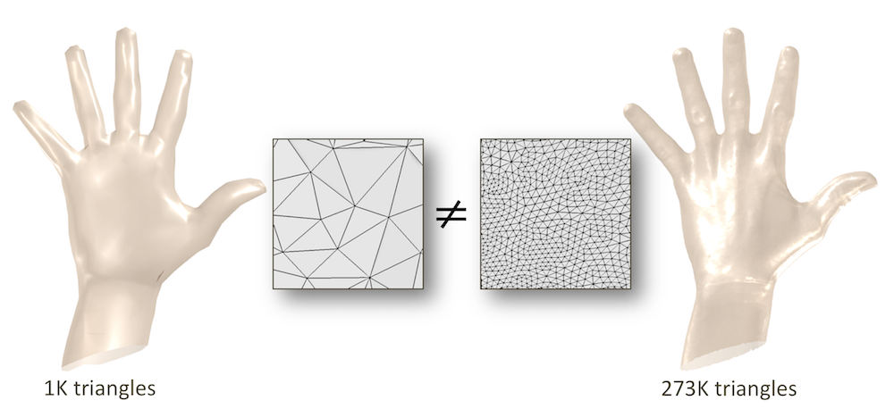
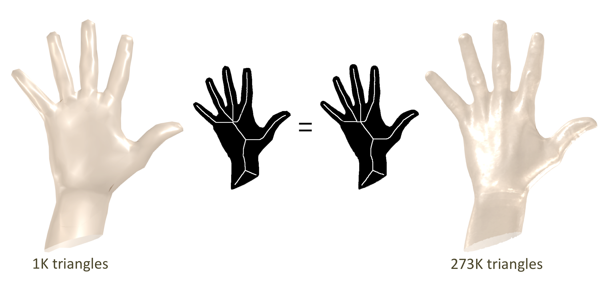
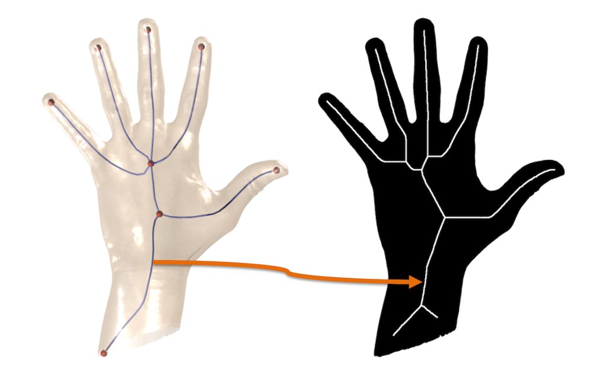

During the first part of my PhD I focused on the problem of computing
curve-skeletons of 3D shapes. This is a well known problem in computer
graphics and many algorithms have been proposed in literature in recent years.
We observed that most of these algorithms are tightly coupled with the
discretization of the shape, both in terms of what type of primitives are
used to represent its surface (triangles, points, voxels, implicit functions...)
and in terms of resolution. Consequently, two objects that the human brain may
perceive as almost identical, like the two hands shown in the figure below, are
usually seen as two completely different entities by skeletonization algorithms
and, thus, may produce very different skeletons

The intuition behind our work is twofold: on the one side we observed that
whatever the discretization of a shape is, its visual appearance will be
consistent with the object being represented. For example the two hands
above will produce very similar silhouettes, if observed from the same point of view

On the other hand, we noticed that in absence of occlusion there is quite
an interesting relation between the curve-skeleton of a 3D shape (left)
and the medial axis of its silhouette (right). In fact, the curve-skeleton
roughly projects over the medial axis!

We therefore implemented a set of algorithms that exploit this relation
and are able to extract the curve-skeleton of a 3D shape just by analysing
a small number of its silhouettes as observed from different points of view.
The main advantages of this approach are:
independence from the discretization - we can deal with triangle meshes,
quad meshes, polygon meshes, polygon soups, implicit surfaces, voxel-based
shapes an more. As long as there exist a way to take a snapshot of a shape
and detect its silhouette, we are good
independence from the resolution - the number of primitives used to describe
a shape is meaningless as long as the visual appearance of the shape is preserved
highly resistent to noise, missing parts, holes, degenerate primitives and
so forth - the silhouette space is much more robust than the geometric space
in which shapes are embedded. This naturally makes our algorithms extremely robust
Here are some videos that date back to 2010, when I was still a master student
and had just started to look into this topic
The results of our research are summarized in three scientific papers and a PhD thesis:
Reconstructing the Curve-Skeleton of 3D Shapes Using the Visual Hull
Marco Livesu, Fabio Guggeri, Riccardo Scateni IEEE Transactions on Visualization and Computer Graphics (TVCG, 2012)
[ PDF,
PPT,
BibTex ]
Practical Medial Axis Filtering for Occlusion-Aware Contours
Marco Livesu, Riccardo Scateni STAG - Smart Tools and Apps for Graphics 2015 (Verona, Italy)
[ PDF,
PPT,
BibTex ]
Extracting Curve-Skeletons from Digital Shapes Using Occluding Contours
Marco Livesu, Riccardo Scateni The Visual Computer (CGI 2013, Hannover, Germany)
[ PDF,
PPT,
BibTex ]
Understanding The Structure of 3D Shapes:Poycubes and Curve-Skeletons
Marco Livesu PhD Thesis (University of Cagliari, 2014, Italy)
[ PDF,
PPT,
BibTex ]